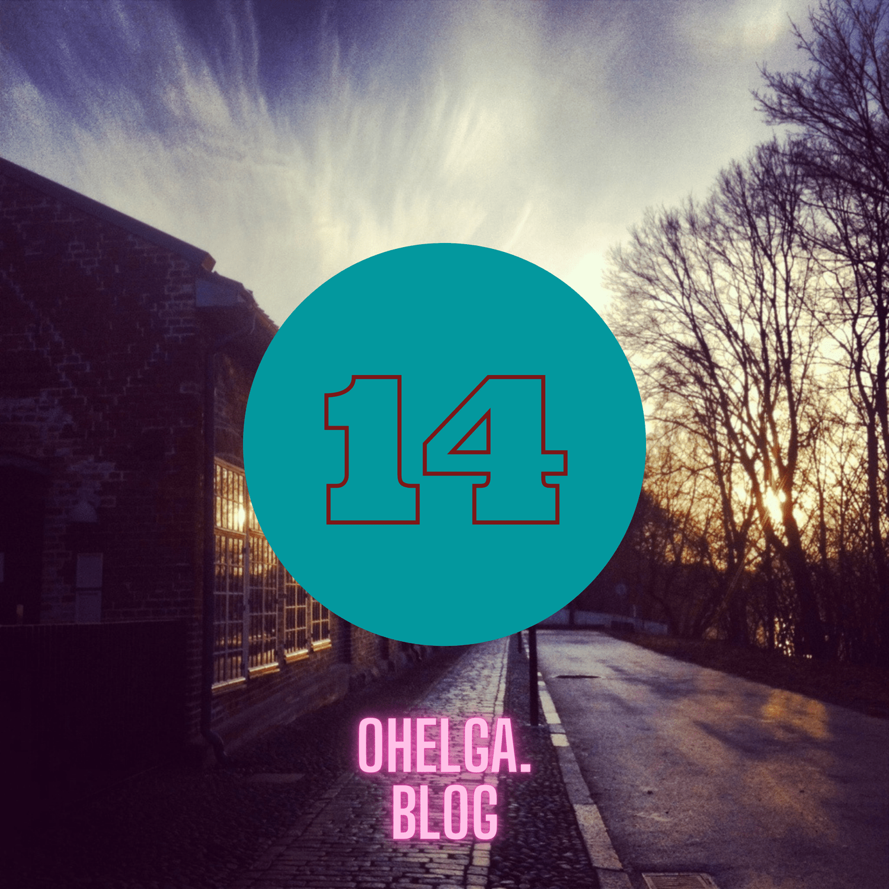

Kvinnan med panflöjtsrösten släpper loss luukussa neljätoista. Satuversio joka jättää makuhuoneen ovi vähän raolla. Mitä mieltä ollaan?
Apple Music:
Spotify (OBS: Spotifyn versio saattaa olla eri!):

Kvinnan med panflöjtsrösten släpper loss luukussa neljätoista. Satuversio joka jättää makuhuoneen ovi vähän raolla. Mitä mieltä ollaan?
Apple Music:
Spotify (OBS: Spotifyn versio saattaa olla eri!):
Kommentit / Kommentarer (1)
<p>Jag tycker ju nog att hon sjunger fantastiskt, även tonen. Men det där med panflöjtrösten var på pricken! Lite så. Trots att hon nog ju sjunger med känsla. Men nåt är det. Det berör liksom inte, är för slipat kanske?</p>